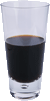

During your stay at the lounge, you'll enjoy a smooth mixture of ambient and mystic sounds, filling the lounge and adding an extra dimension to your dining experience. The decor surrounds you with the relaxing sentiments of sights from eras past. And, don't forget, the lounge offers free wireless access to the Internet, so bring your laptop.
Our guarantee: at the lounge, we're committed to providing you, our guest, with an exceptional experience every time you visit. Whether you're just stopping by to check in on email over an elixir, or are here for an out-of-the-ordinary dinner, you'll find our knowledgeable service staff pay attention to every detail. If you're not fully satisfied, have a Blueberry Bliss Elixir on us.
Now that you've experienced the lounge virtually, isn't it time to check us out for real? We're located right in the heart of Webville, and we've created some detailed directions to get you here in record time. No reservations necessary; come and join us anytime.

The ultimate healthy drink, this elixir combines herbal botanicals, minerals, and vitamins with a twist of lemon into a smooth citrus wonder that will keep your immune system going all day and all night.

Not your traditional chai, this elixir mixes maté with chai spices and adds an extra chocolate kick for a caffeinated taste sensation on ice.

Want to boost your memory? Try our Black Brain Brew elixir, made with black oolong tea and just a touch of espresso. Your brain will thank you for the boost.
Join us any evening for these and all our other wonderful elixirs.
We're frequently asked about the music we play at the lounge, and no wonder, it's great stuff. Just for you, we keep a list here on the site, updated weekly. Enjoy.
© 2012, Head First Lounge
All trademarks and registered trademarks appearing on this site are
the property of their respective owners.